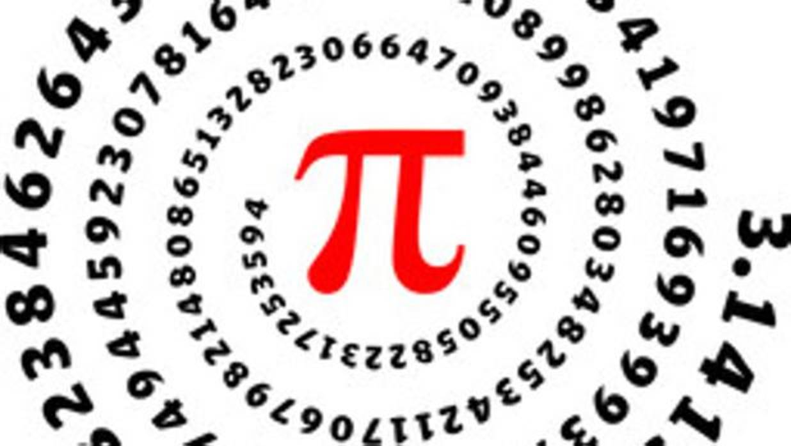
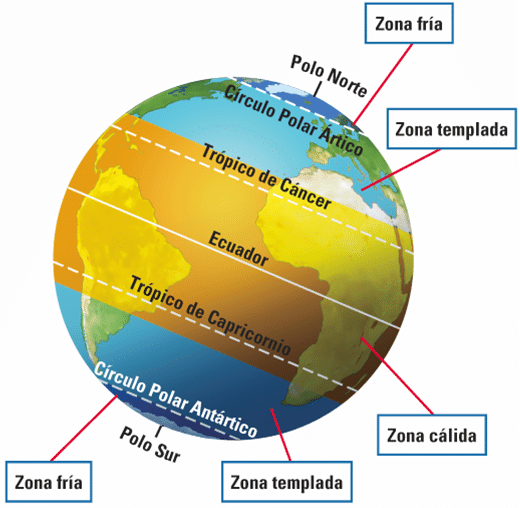

Situaciones de aprendizaje para el desarrollo de competencias
Damos la vuelta al mundo sin movernos del aula
1.1.1. Asignatura
Matemáticas
11.1.2. Etapa o nivel
Bachillerato
11.1.3. Contexto y desempeño final
La mayoría de las personas, consienten confiar en su intuición por encima de todo, sin hacer uso de su capacidad crítica. Así pues las opiniones se confunden con los hechos para la mayor parte de las personas. Esto supone un verdadero lastre para el progreso humano..
Vamos a tratar de desmontar este hábito mediante la ciencia y en concreto mediante una de sus herramientas más básicas, las Mamteáticas.
Partiendo de la base matemática adquirida durante los cursos anteriores de secundaria vamos a poner en práctica el método científico para domar la intuición de un modo objetivo por medio de las Matemáticas y la experimentación.
11.1.4. La tarea
Plantear al alumnado el siguiente experimento mental:
Si pudieramos rodear la Tierra con una cinta por el ecuador, su longitud sobrepasaría los 40.000 km. Si colocáramos sobre ella otra cinta que mida un par de metros más que al anterior de modo que la distancia entre ellas fuera uniforme, ¿podrías pasar entre ambas cintas?
Recursos Un balón de fútbol o baloncesto. Un metro de costura o una cuerda.
Debatir solo mediante la intuición y los recursos disponibles el resultado del experimento.
El alumno debe desarrollar las siguientes ecuaciones por su cuenta:
El perímetro de una circunferencia es $p=2\pi r$
Si despejamos el radio obtendremos:
$$r=\frac{p}{2\pi}$$Caso 1: La cuerda mide 40.000.000 m Sustituyendo en la ecuacion obtenemos que el radio es de $p=\frac{40.000.000}{2\pi}=6.366.197$ metros
Caso 2: La cuerda mide 40.000.002 m Sustituyendo en la ecuacion obtenemos que el radio es de $p=\frac{40.000.002}{2\pi}=6.366.198$ metros
1.1.5. Conclusión y final de la situación
Puesto que el radio de la segunda cuerda es un metro mayor que la primera concluimos que queda a un metro de altura una cuerda sobre la otra y por lo tanto, podemos pasar (agachados) entre ambas.
Acabamos de comprobar que la intuición no es fiable sin prueba objetivas que lo refrenden.
Es por lo tanto preciso pedir al alumnado que escriban de manera individual un párrafo con cuatro o cinco líneas explicando como se sentían defendiendo sus hipótesis cuando debatieron sobre los hechos en la primera parte. A destacar aquellos que sentían que tenían la razón de su lado, pero necesitaban de una herramienta para demostrar sus hipótesis y la han encontrado en las matemáticas..
11.1.6. Principales competencias implicadas
- Competencia comunicativa El alumnado ha debatido previamente el resultado del experimento.
- Competencia matemática, científica y de ingeniería El alumnado ha desarrollado las ecuaciones y ha interpretado la información.
- Competencia digital Los cálculos eran lo suficientemente complicados para tener que usar una calculadora.
11.1.7. Relación con los objetivos de desarrollo sostenible
El alumnado ha empleado el método científico y ha lo ha interiorizado. Dicho método es el responsable de haber permitido el avance de al ciencai para curar enfermedades y mejorar el objetivo de salud y bienestar.
Además, la organización para obtener datos y analizar la conclusión es imprescindible para el objetivo de desarrollo de industria, innovación e infraestructura puesto que precisa de la organización de proyectos en base a la gestión de datos y el anális de los mismos.